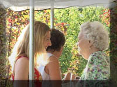

|
Rehearsal Dinner
|
|||||
| It is becoming increasingly popular to have your rehearsal dinner videotaped. With all the special people attending, there's bound to be some funny moments and touching stories of the past relived. What better way to remember these moments than to capture them on video. We will attend the rehearsal dinner and unobtrusively capture all that is going on to create a wonderful memory for you and your friends and family to remember forever. |  |
||||
| Please click on the snapshot image above and allow some time (usually a few seconds) for the video segment to load and play. Broadband connection is recommended. Requires Windows Media Player. | |||||